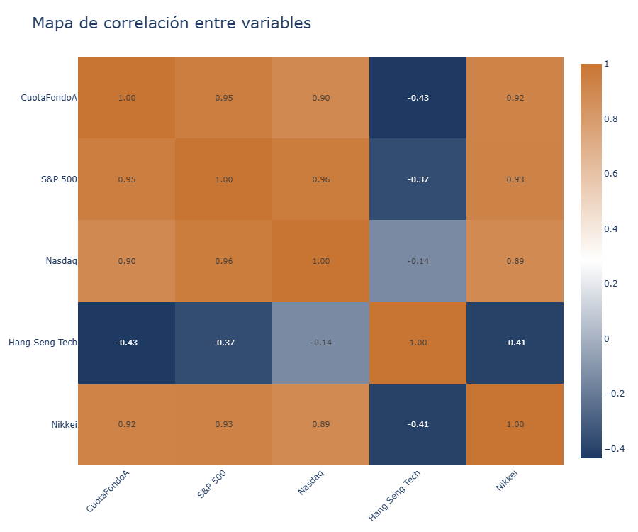
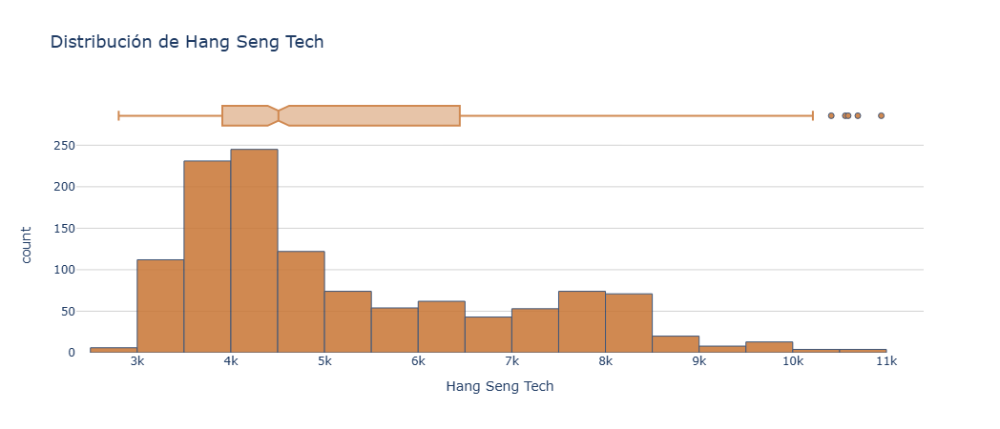

Visualizaciones del Análisis
Evolución temporal de CuotaFondo A — 2019–2024
La serie revela tres fases: la caída de 2020 por la pandemia (~$40k mínimo), una recuperación sostenida hasta 2022, y una meseta de 18 meses por el ciclo de alzas de la Fed. Desde 2024 la cuota retomó la senda alcista superando los $75k, casi duplicando el valor respecto al piso pandémico.

Mapa de correlación entre variables de mercado
La matriz muestra correlaciones superiores a 0.90 entre el Fondo A, S&P 500 (0.95), Nikkei (0.92) y Nasdaq (0.90): prácticamente el mismo riesgo sistémico. La excepción es el Hang Seng Tech (−0.43), cuyo ciclo divergente —regulación china, geopolítica y tasas independientes— genera una descorrelación real y medible, valiosa para reducir volatilidad de portafolio.

Distribución del Hang Seng Tech
El histograma evidencia una distribución asimétrica positiva: masa concentrada entre 3k–5k puntos y cola derecha hasta 11k (boom tech chino, 2021). El boxplot confirma múltiples outliers al alza. Esta estructura implica retornos explosivos en períodos cortos, pero ciclos deprimidos prolongados — perfil que, combinado con su correlación negativa, lo posiciona como activo de cobertura con potencial de alfa.
